Префектура Хоккайдо · озеро Акан и Абасири · зима
Зима на озере Акан: прогулка по льду на рассвете, рыбалка в палатке и день у дрейфующего льда Абасири

С конца декабря по март озеро Акан на востоке Хоккайдо замерзает целиком, и по нему можно ходить. На льду ставят палатки для рыбалки, гоняют на снегоходах, а на рассвете с гидом идут к островку, куда летом добираются только на лодке.
Дорога
Когда озеро становится площадью
От аэропорта Кусиро до курортного посёлка Акан-ко Онсэн около часа на шаттл-автобусе. Зимой дорога идёт через сплошной снежный лес, и уже у автобусной станции в посёлке воздух такой, что сразу понятно: это настоящая хоккайдская зима. В феврале ночью здесь бывает ниже минус 15 градусов.
Озеро Акан лежит в кальдере, окружено горами и стоит на горячих источниках, поэтому онсэн есть в любой гостинице посёлка. Это удобно: после прогулки по снегу или катания на льду можно сразу согреться в горячей воде, а потом снова выйти на холод. О природе Акана в другие сезоны рассказывает отдельная статья, об айнской деревне на берегу в статье «Айнская деревня Акан-ко».
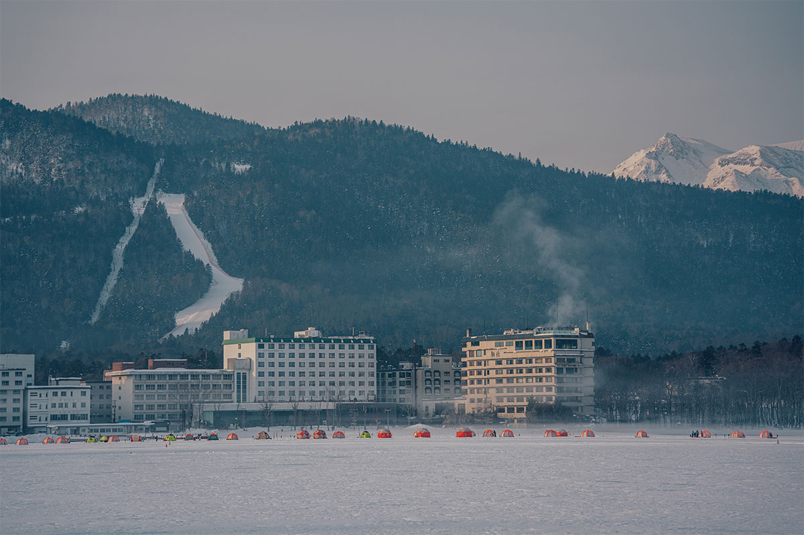
Озеро замерзает целиком примерно с декабря по март, и в 2022 году толщина льда доходила до 80 сантиметров. Из окон гостиниц, выходящих на озеро, зимой видна совсем другая картина, чем осенью: разноцветные палатки рыбаков, каток, банан на буксире, снегоходы. Часть льда даже служит парковкой для машин, и многих приезжих это удивляет больше всего.
Лёд
Рыбалка на вакасаги и другие развлечения
Главное зимнее занятие на Акане это подлёдная рыбалка на вакасаги, маленькую рыбку из семейства корюшковых. На льду стоят десятки палаток, а внутри каждой просверлена лунка диаметром около 15 сантиметров. В неё опускают леску с наживкой и ждут. Поклёвка едва заметна, лёгкое подрагивание, и если вовремя подмотать катушку, на крючке окажется блестящая серебристая рыбка. Снасти выдают напрокат на месте, так что приходить можно с пустыми руками.
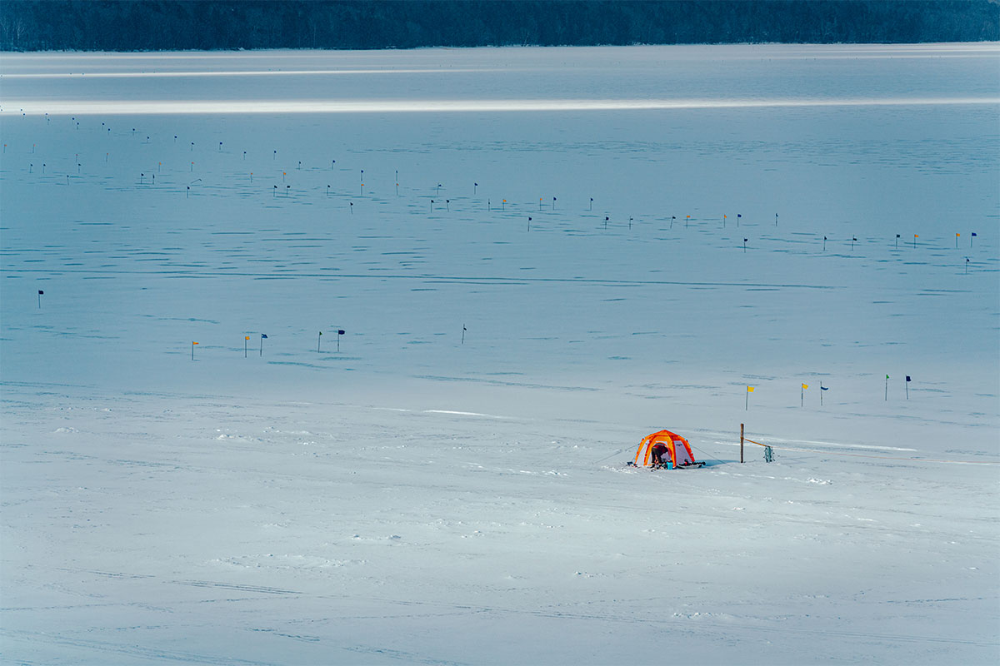
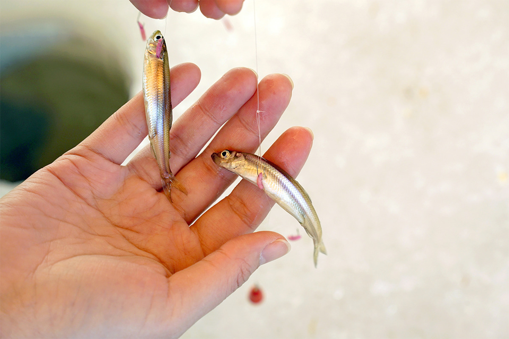
Улов можно отдать в закусочную на берегу, где его жарят в темпуре. У вакасаги лёгкая горечь и густой вкус, и остановиться трудно.
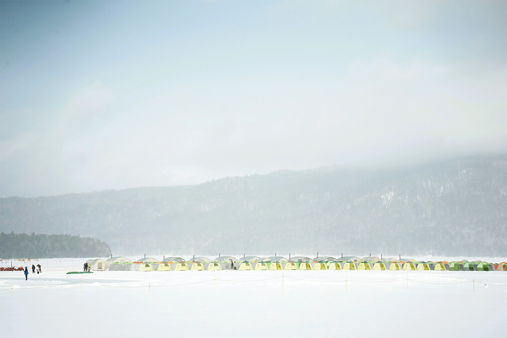
Кроме рыбалки на льду катаются на снегоходах, багги и коньках, есть ледяная горка, а банан, надувную лодку на буксире, тянут по льду на большой скорости. Ощущение полёта над озером куда острее, чем ожидаешь. Для семей с детьми зима здесь, пожалуй, лучшее время: развлечений на льду хватает на несколько дней.
В феврале 2022 года у озера поставили финскую бочку-сауну. На раскалённые камни льют воду, долго греются в пару, а потом остывают прямо на морозе.
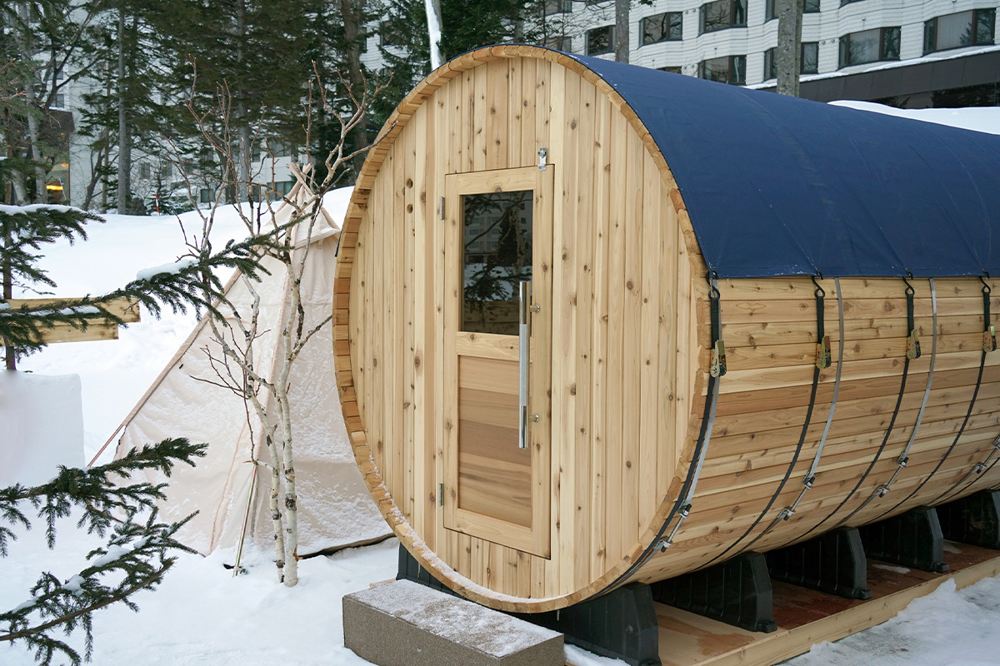
Праздники
Огонь и музыка на льду
Зима на Акане это ещё и время айнских праздников. В феврале 2021 года на льду озера прошла церемония «Молитва камуй»: по айнскому обряду молились об окончании эпидемии коронавируса и благодарили медиков, а затем над льдом запустили фейерверк.
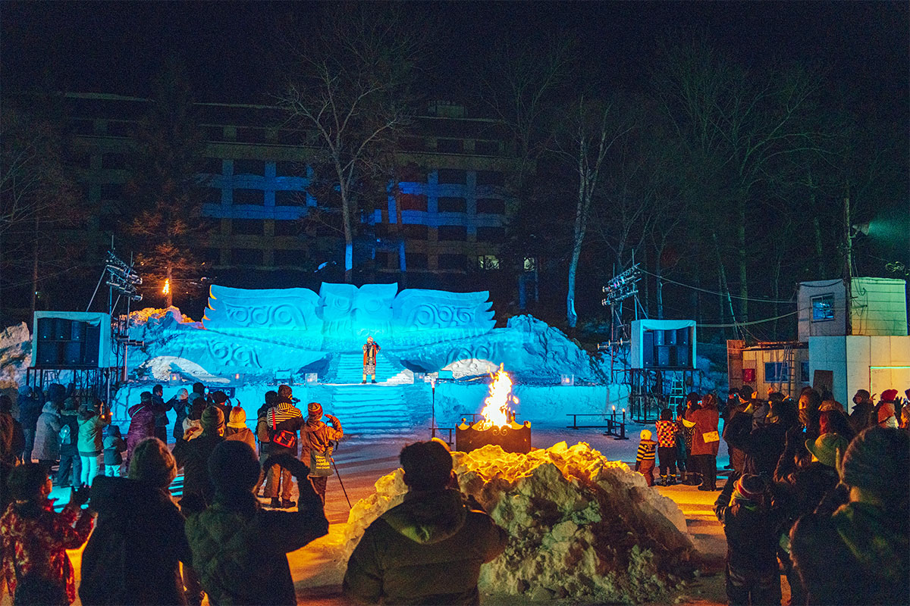
13 и 14 февраля 2021 года в посёлке прошёл фестиваль «Утаса». Айнские песни и танцы, игра на варгане мукури и щипковом тонкори, сказания юкар звучали вместе с музыкой артистов из Японии и других стран, которым близка айнская культура. Из-за эпидемии концерты в тот год шли онлайн, без зрителей. Об айнском театре «Икор» на берегу озера читайте в статье об айнской деревне.
Рассвет
Через озеро к островку
Самое необычное, что можно сделать зимой на Акане, это пройти по льду через озеро. В 2021 и 2022 годах такие прогулки водил гид Akan Nature Center, местной компании природных туров. Выход в шесть утра, вскоре после рассвета: путь лежит через лес, потом по льду к маленькому островку, куда в остальное время года добираются только на лодке.
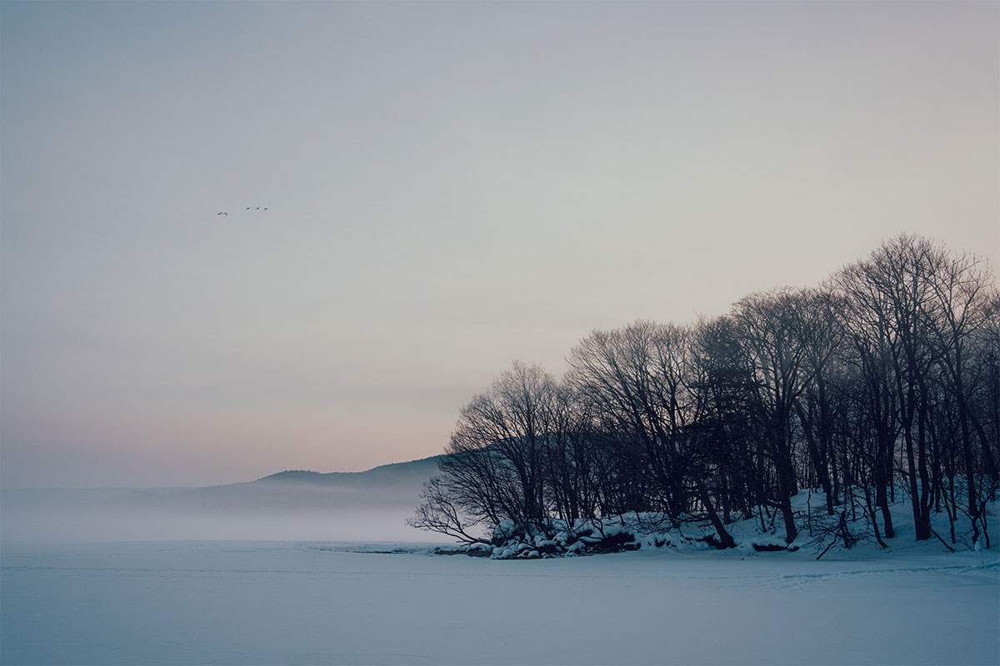
В феврале солнце встаёт около шести, но горы со всех сторон закрывают горизонт, и над ними оно показывается только после половины седьмого. По льду идут цепочкой, почти по нетронутому снегу. Белая равнина тянется до самого горизонта, а только что взошедшее солнце освещает следы. Казалось, что идёшь по другой планете.
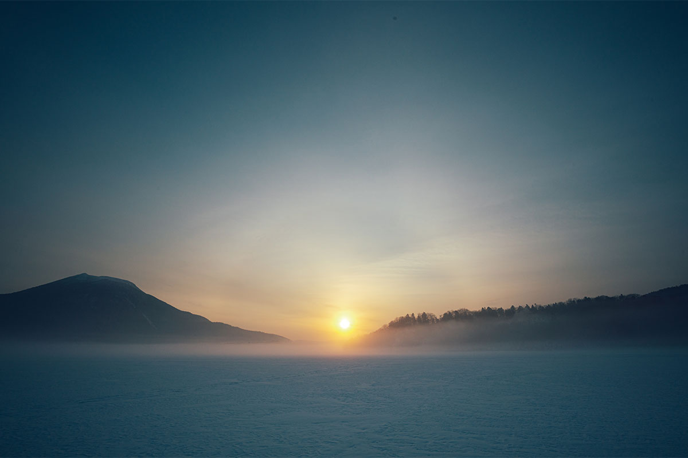
Одному выходить на лёд не стоит. Лёд кажется ровным, но со дна озера бьют горячие источники, и над ними образуются юцубо, промоины, где лёд тонкий или его нет совсем. В рыхлый снег легко провалиться так, что не выбраться без помощи. А ещё гид показывает то, чего сам никогда не заметишь.

Следы в лесу
В лесу на снегу видны цепочки следов, явно не человеческих. Гид объясняет: лиса, олень, белка. В лесах Акана живут и белки-летяги. Их любимая еда это хвоя сахалинской пихты: если сломать веточку и понюхать, пахнет свежо и легко.
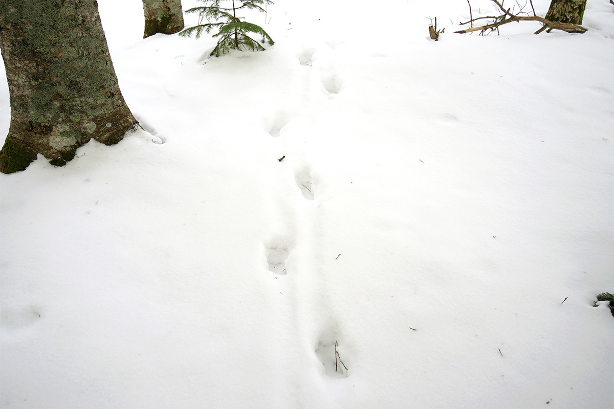
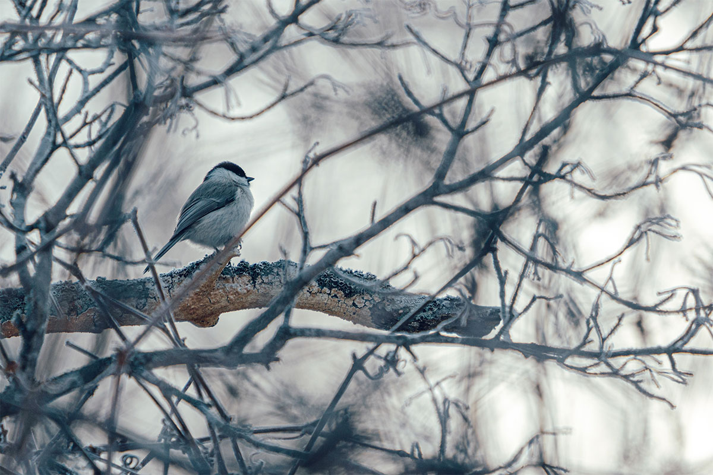
По стволу ильма охё бежала белка. Айны делали из коры этого дерева ткань аттуси, а чтобы внутренний слой коры легче отделялся, вымачивали её в горячих источниках. Так айны веками жили рядом с природой Акана и пользовались её дарами.
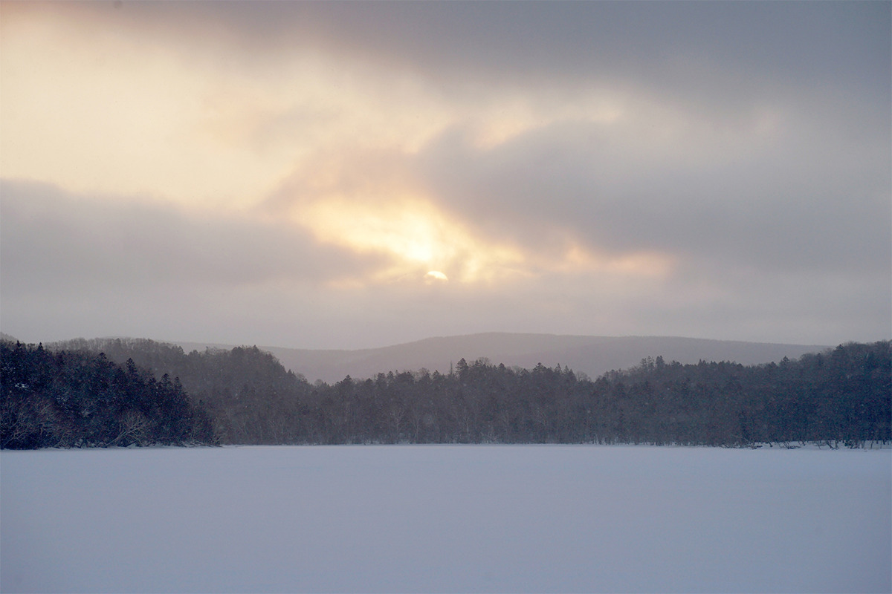
На озере звуки гаснут в снегу, и наступает полная тишина. Идти нужно след в след за гидом, иначе нога проваливается, и теряешь равновесие.
«Говорят, медведь на снегу расставляет пальцы на лапе, чтобы держать равновесие. С человеком то же самое: ставьте ногу на всю стопу, так идти легче»
гид Akan Nature Center
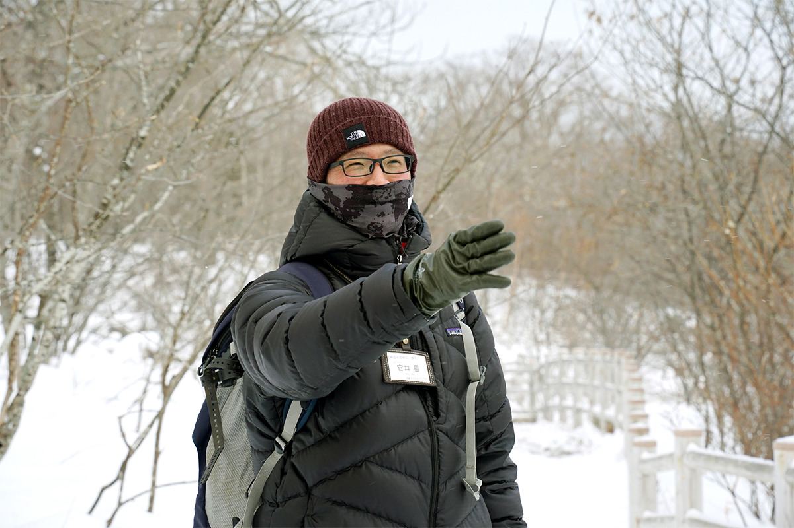
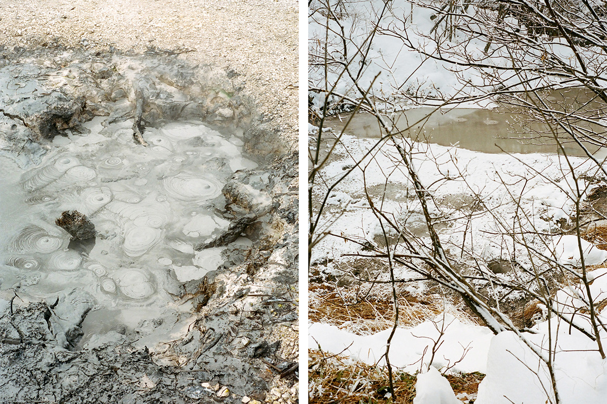
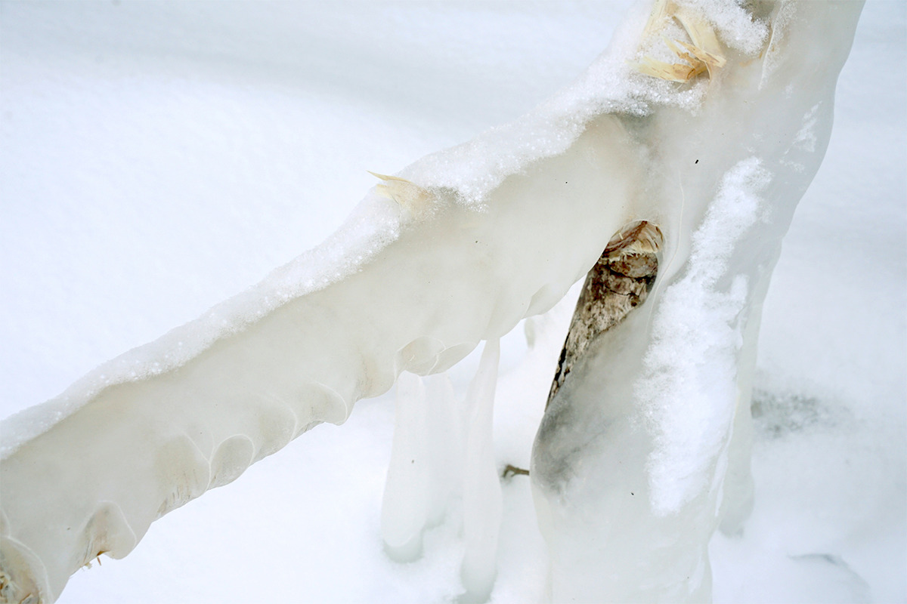
Когда возвращаешься в лес после тишины на льду, слышишь каждый звук: стучит дятел, перекликаются мелкие птицы. Гид рассказал, что птицы разных видов собираются зимой в одну стаю: так легче уберечься от хищников и найти места, где есть корм. Урок о том, что такое разнообразие, здесь неожиданно дают мелкие птицы.
В конце маршрута встречают пушистые почки магнолии кита-кобуси. Когда она зацветёт белым, на Акан наконец придёт весна.
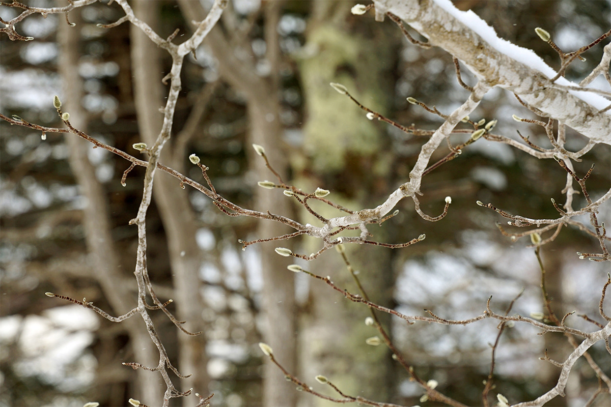
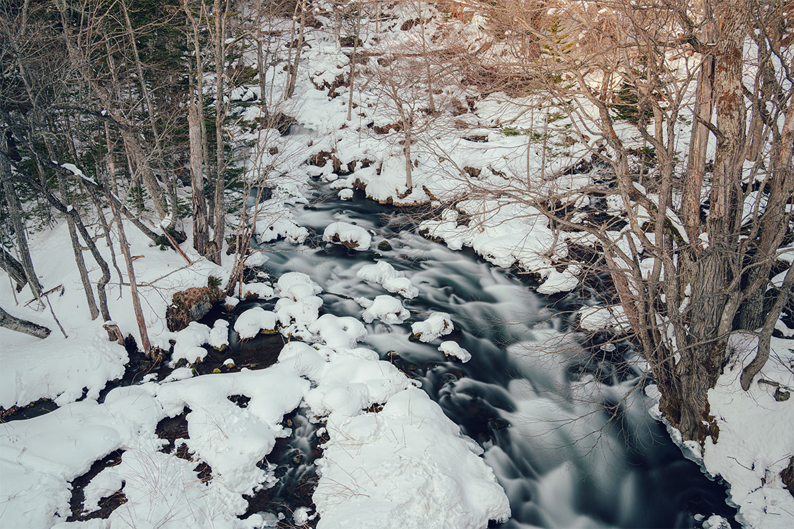
Akan Nature Center
- Адрес
- префектура Хоккайдо, Кусиро, Акан-тё, Акан-ко Онсэн, 5-3-3
- Сайт
- akan.co.jp
Абасири
День у Охотского моря
Озеро Акан удобно как база для поездок по востоку Хоккайдо. Если выехать утром, вполне можно съездить на день в Абасири: на машине это около полутора часов на север, к берегу Охотского моря.
Музей северных народов Хоккайдо
Префектурный музей северных народов это единственный в Японии музей, целиком посвящённый жизни, культуре и верованиям северных народов. Здесь рассказывают об айнах и уильта (ороках), а также о народах от Гренландии на востоке до Скандинавии на западе. Постоянная экспозиция устроена по темам: одежда, музыкальные инструменты, охотничье снаряжение, предметы быта. Вещи разных народов стоят рядом, и видно, что их объединяет и чем они отличаются. При музее есть библиотека.
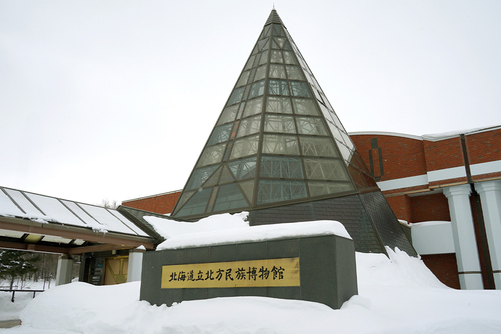
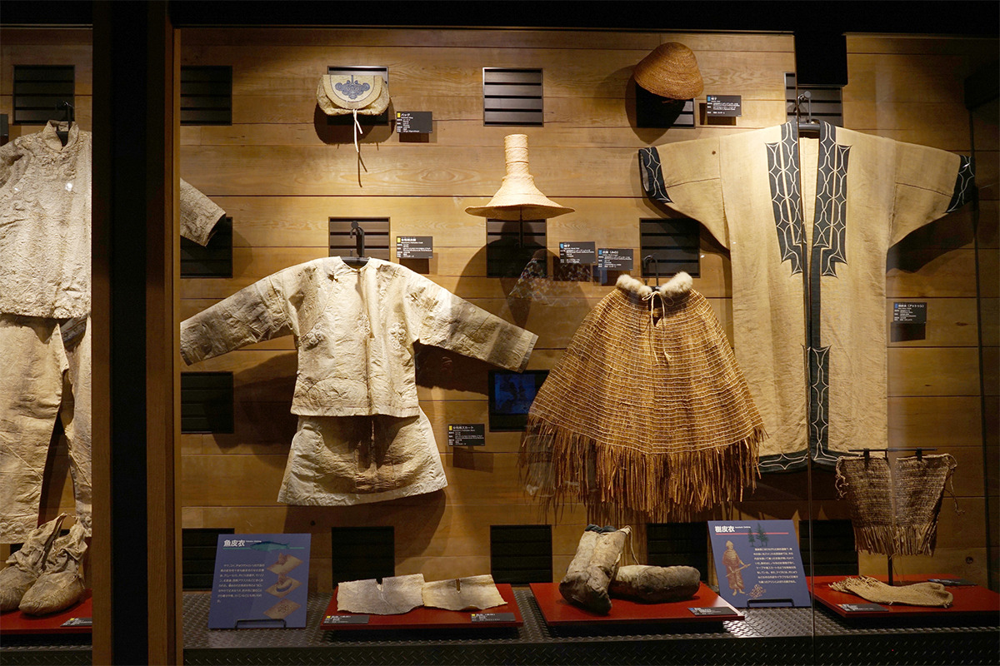
Музей северных народов Хоккайдо
- Адрес
- префектура Хоккайдо, Абасири, Сиоми, 309-1
- Телефон
- +81 152-45-3888
- Сайт
- hoppohm.org
Музей тюрьмы Абасири
Музей тюрьмы Абасири под открытым небом собран из тюремных построек эпох Мэйдзи и Тайсё (1868–1926), которые перенесли сюда и восстановили. Всего здесь 24 здания, восемь из них, включая тюремный корпус и центральный пост охраны, объявлены важным культурным достоянием страны, ещё шесть внесены в реестр культурных ценностей. Музей рассказывает, какую роль каторжная тюрьма, предшественница нынешней тюрьмы Абасири, сыграла в освоении Хоккайдо.
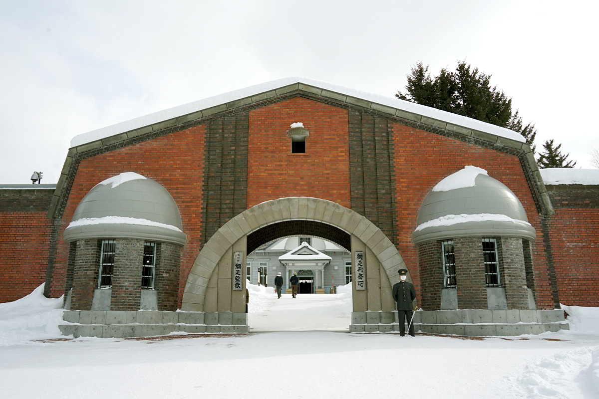
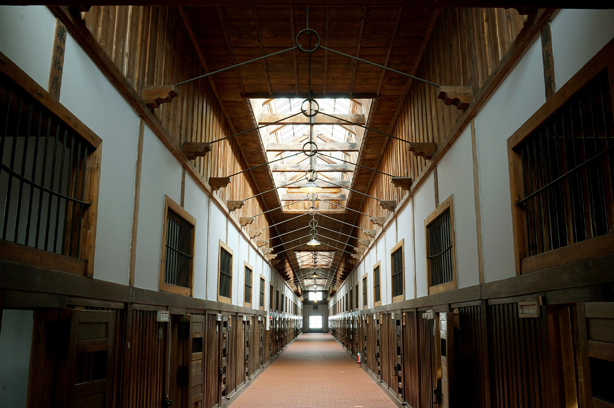
Музей тюрьмы Абасири
- Адрес
- префектура Хоккайдо, Абасири, Ёбито, 1-1
- Телефон
- +81 152-45-2411
- Сайт
- kangoku.jp
Дрейфующий лёд
Ледокол «Аврора»
После обеда в Абасири стоит подняться на борт «Авроры». Этот ледокол построили специально для туристов, и зимой, с января по март или апрель, он каждый день несколько раз выходит в Охотское море, к дрейфующему льду. Прогулка длится около часа.
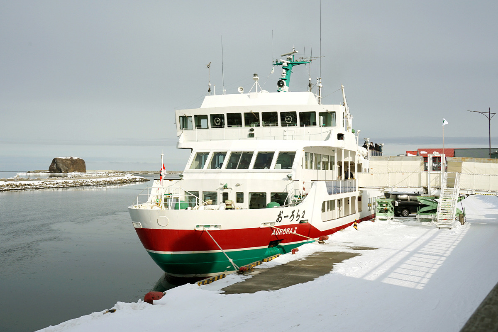
У «Авроры» вдвое больше лошадиных сил, чем у обычного судна её размера. Войдя в поле льда, она с грохотом ломает льдины на своём пути. Каждый раз, когда нос ударяет в льдину, белый лёд с голубоватым отливом встаёт дыбом вдоль борта, и смотреть на это можно бесконечно. Качки при этом почти нет.
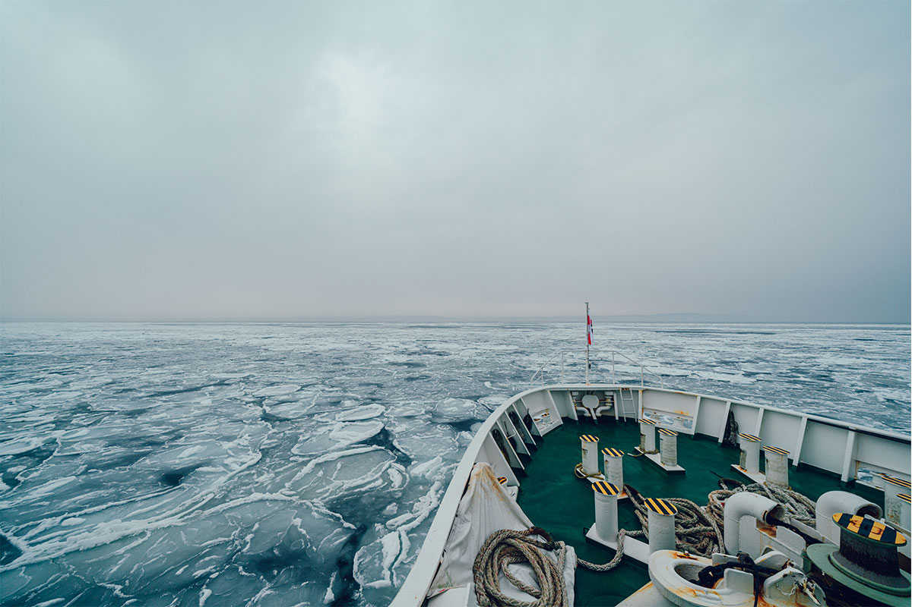
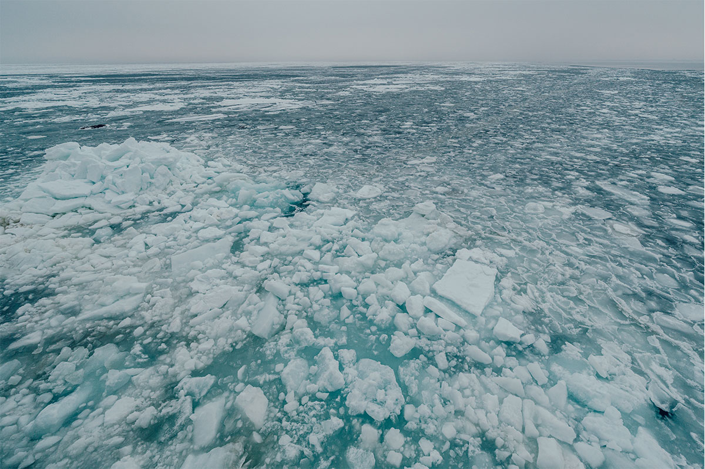
Глядя на лёд, интересно представить, откуда он пришёл. Дрейфующий лёд рождается у берегов Сибири и, вбирая питательные вещества, которые потом кормят здешнее море, проходит на юг несколько сотен километров. В январе он доходит до Момбэцу и Абасири, затем движется на восток вдоль берегов Сяри и Сиретоко, а к Тихому океану от него остаются лишь мелкие куски, которые тают в море.
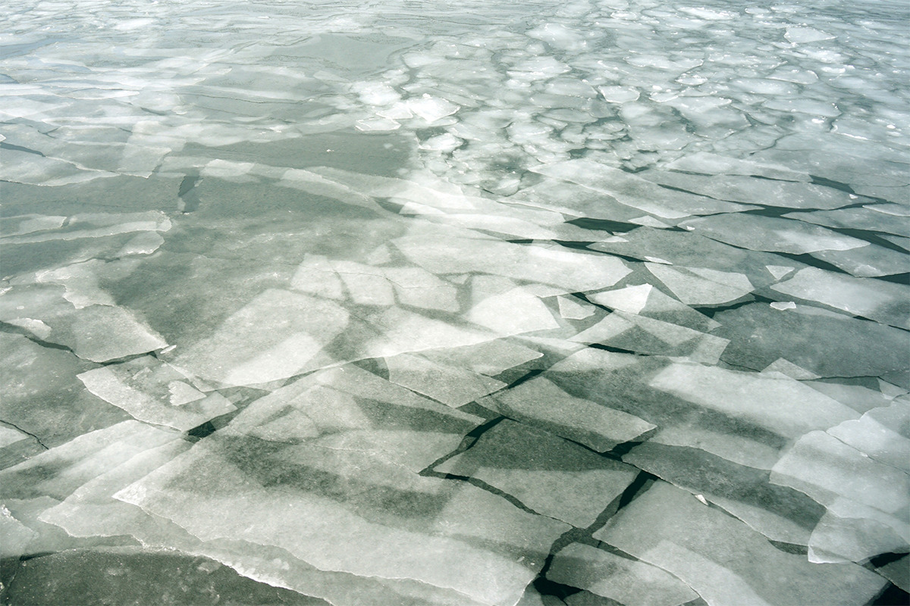
Лёд всё время движется под ветром, и увидеть его удаётся не всегда. В 2021 году ледокол прошёл сквозь большие поля льда, а в феврале 2022 года самих льдин не было. Но и тогда судно резало море, покрытое ледяной кашей, а за горизонтом поднимались горы Сиретоко. На обломках льда сидели орланы-белохвосты и белоплечие орланы, а в другой раз у кромки льда видели тюленей.
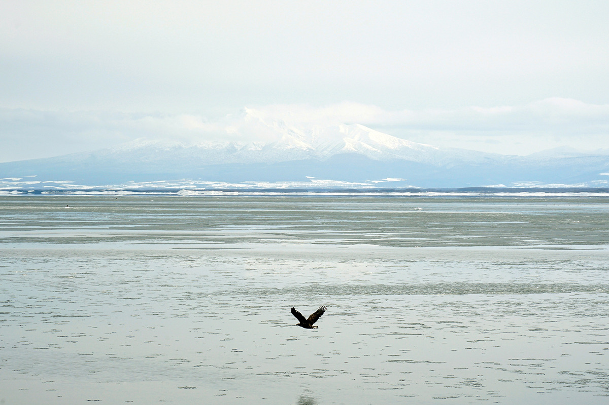
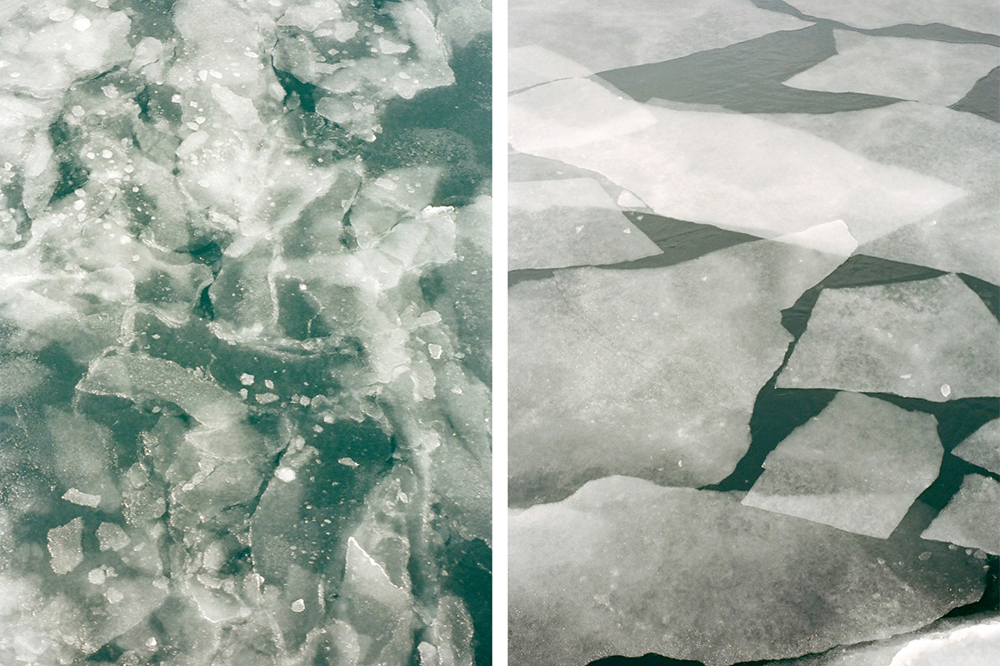
На борту обязательно стоит попробовать фирменную газировку «Охотск скай сайдер» цвета дрейфующего льда.
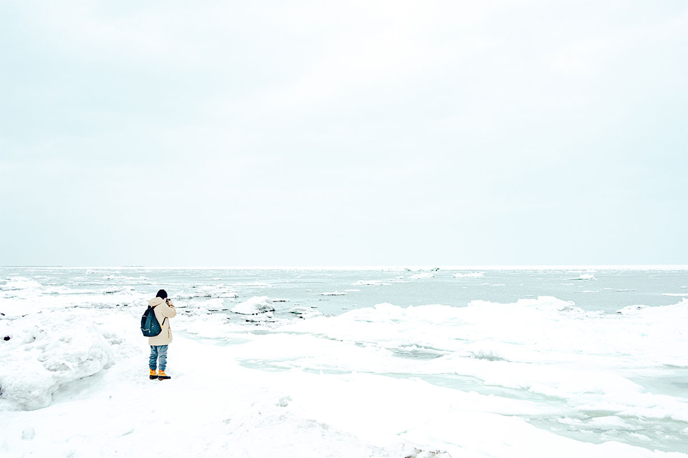
Ледокол «Аврора»
- Адрес
- префектура Хоккайдо, Абасири, Минами-3-дзё Хигаси, 4-тёмэ (придорожная станция «Рюхё Кайдо Абасири»)
- Телефон
- +81 152-43-6000
- Даты
- январь–апрель (по оригиналу 2022 года)
- Сайт
- ms-aurora.com
По пути можно проехать в сторону городка Сяри, где прямая дорога тянется около 18 километров, будто уходит в небо. Её так и называют: «Дорога в небо».
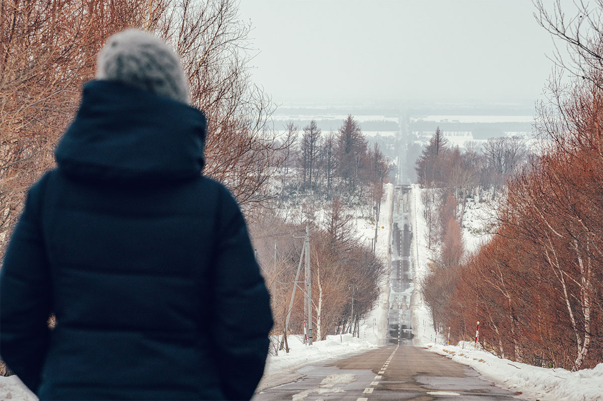
Фото: Юити Ёкота, Юка Судзуки.